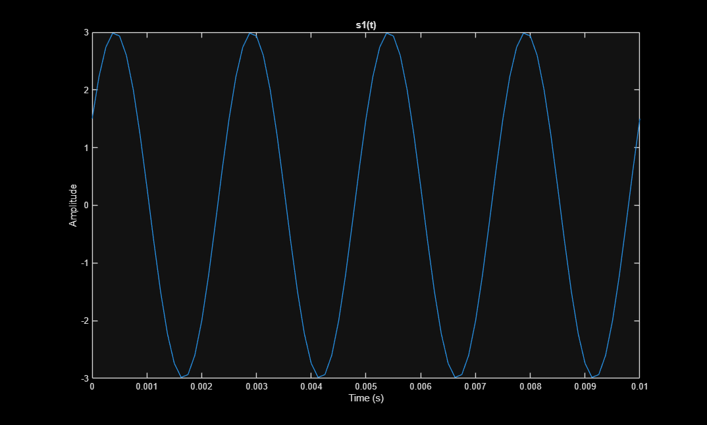
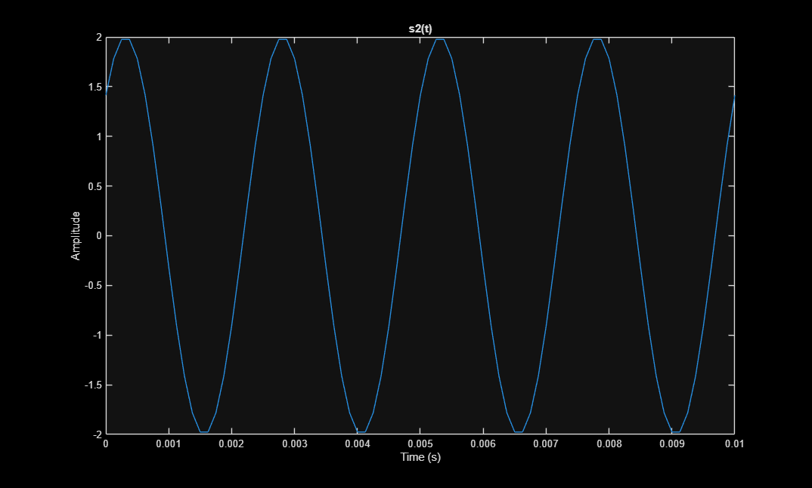
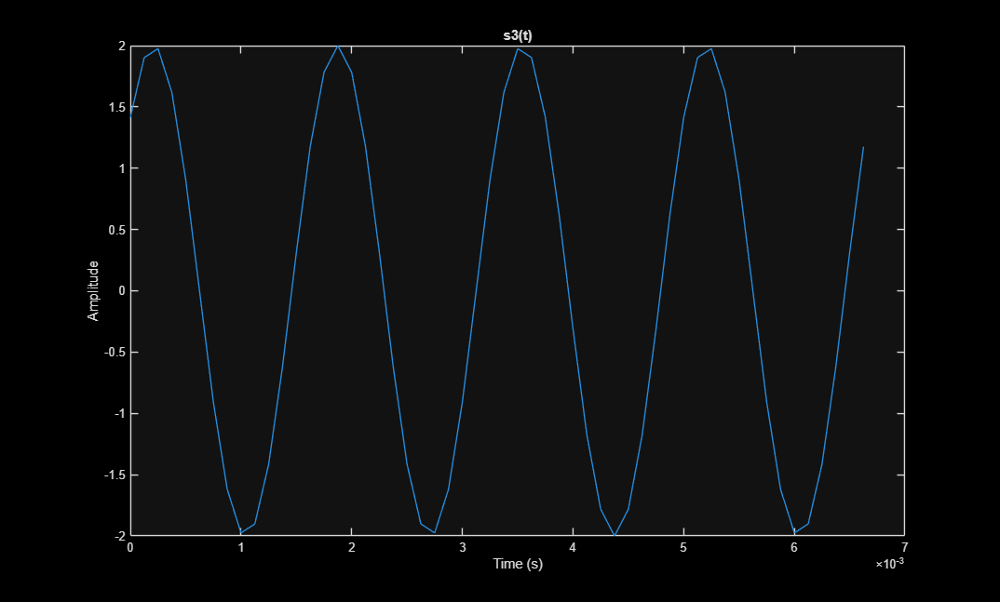
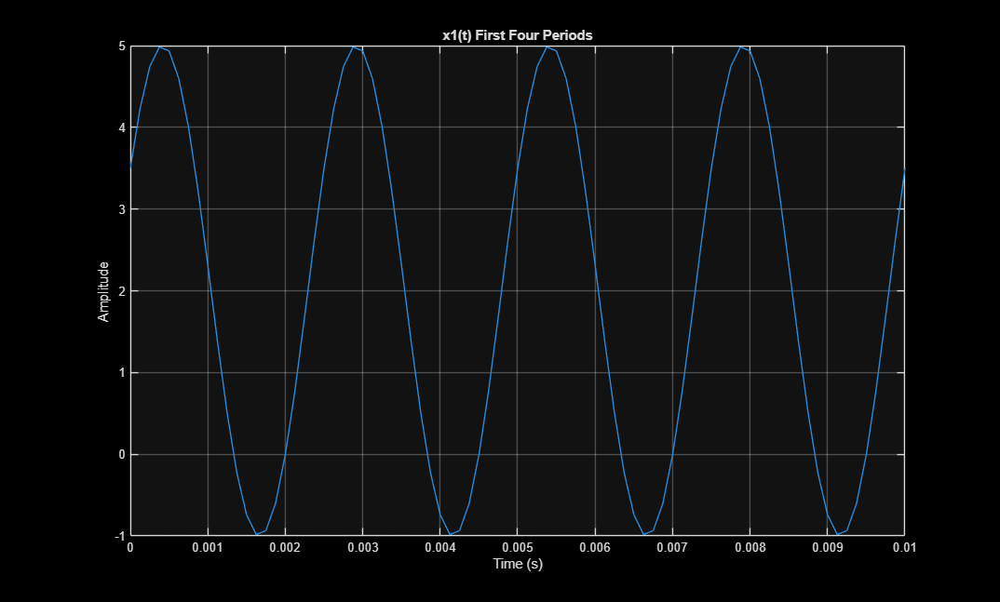
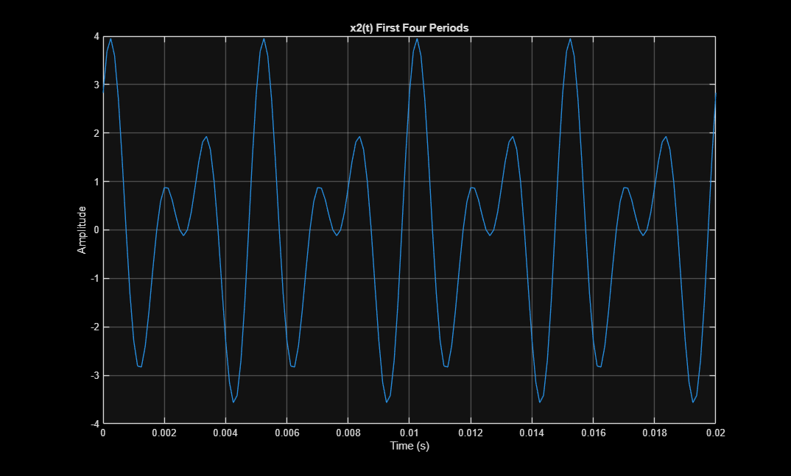

Contents
- PREAMBLE
- QUESTION 1: COMMENTING
- QUESTION 2
- 2(a) PLOT FIRST FOUR PERIODS
- 2(b) CREATE AND SUBMIT .WAV FILE
- 2(b) CREATE AND SUBMIT .WAV FILE
- 2(c) PLOT FIRST FOUR PERIODS
- 2(d) PLOT FIRST FOUR PERIODS
- QUESTION 3
- 3(a) CREATE SOUND
- 3(b) MODIFY FUNCTION (key_to_note_trumpet function is at end of file)
- 3(c) CREATE SOUND (build_song_trumpet function is at end of file)
- 3(d) CREATE SOUND (build_song_time function is at end of file)
- 3(e) PLOT COMPARISONS
- 3(f) ANSWER QUESTION
PREAMBLE
DO NOT REMOVE THE LINE BELOW
clear;
close all;
QUESTION 1: COMMENTING
=========================
type('eel3135_lab_FourierSynthesis_comment.m')
%% ACKNOWLEDGEMENTS / REFERENCES:
% This code uses functions written by Ken Schutte in 2019, which is used to
% read and decode midi files. The code is under a GNU General
% Public License, enabling us to run, study, share, and modify the
% software.
%
% More info can be found at: http://www.kenschutte.com/midi
%% INITIAL SETUP
clear
close all
clc
%% DEFINE MUSIC
% INTITIAL VARIABLES
Fs = 44100; % Sampling frequency (Hz)
% Reads our audio file, finding the pitch, endtime shows duration.
[Notes, endtime] = midiInfo(readmidi('gym.mid'), 0, 2);
L = size(Notes,1); % How many notes in our midi file
% Builds a song from our notes, gives an amplitudes of 1, defines the key
% of our note, the duration, and takes our sampling frequency.
x = build_song(ones(L,1), Notes(:,3), Notes(:,6)-Notes(:,5), Fs);
% Finds the duration of the notes and finds the total number of samples
tot_samples = ceil(sum(Notes(:,6)-Notes(:,5))*Fs);
% Creates a time vector for creating our waveform
t = 0:1/Fs:(tot_samples-1)/Fs;
% Plots our waveform
figure(1);
subplot(211)
plot(t, x);
xlabel('Time [s]')
ylabel('Amplitude')
% Replots with a smaller scope, 'zooming in'
subplot(212)
plot(t, x);
xlabel('Time [s]')
ylabel('Amplitude')
axis([0 0.1 -1 1]) % Restricts our x-axis to the first 0.1 seconds, and y axis to -1:1
% ===> Describe what the next line does here <===
input('Click any button to play sound')
soundsc(x, Fs);
% ========
% YOU DO *NOT* NEED TO DESCRIBE THESE LINES (your free to figure it out though)
W = 0.1; % Window size
tic;
for mm = 1:ceil(tot_samples/Fs/W)
% PAUSE UNTIL NEXT FRAME
xlim([(mm-1)*W+[0 W]]); % Set limits of plot
tm = toc; % Check current time
if mm*W < tm, disp(['Warning: Visualization is ' num2str(mm*W-tm) 's behind']); end
drawnow; pause(mm*0.1-tm); % Synchronize with clock
end
% =======
%%
% =========================================
% SUPPORTING FUNCTIONS FOUND BELOW
% Add comments appropriately below
% =========================================
function x = key_to_note(A, key, dur, fs)
% key_to_note: Converts piano key to a sinusoidal waveform
%
% Input Args:
% A: complex amplitude
% key: number of the note on piano keyboard
% dur: duration of each note (in seconds)
% fs: A scalar sampling rate value
%
% Output:
% x: sinusoidal waveform of the note
% Calculate the number of samples, creates a vector, and converts the
% key to a frequency.
N = floor(dur*fs);
t = (0:(N-1)).'/fs;
freq = (440/32)*2^((key-9)/12);
% ===> Creates a complex sinuosoid, taking the real part for our
% waveform audio
x = real(A*exp(1j*2*pi*freq*t));
end
function x = build_song(As, keys, durs, fs)
% build_song: Creates audio from our note inputs
%
% Input Args:
% As: A length-N array of complex amplitudes for building notes
% keys: A length-N array of key numbers (which key on a keyboard) for building notes
% durs: A length-N array of durations (in seconds) for building notes
% fs: A scalar sampling rate value
%
% Output Args:
% x: A length-(N*fs) length raw audio signal
%
% Creates zeroes for the samples of the audio
x = zeros(ceil(sum(durs)*fs), 1);
for k = 1:length(keys)
% Generates a note waveform, finds start point of the note based
% on sum of other notes prior
note = key_to_note(As(k), keys(k), durs(k), fs);
start_time = sum(durs(1:k-1));
% Creates start time and duration to make sample indices
n1 = floor(start_time*fs) + 1;
n2 = floor(start_time*fs) + floor(durs(k)*fs);
x(n1:n2) = x(n1:n2) + note;
end
end
QUESTION 2
=========================
2(a) PLOT FIRST FOUR PERIODS
fs = 8000; f1 = 400; f2 = 400; f3 = 600; T1 = 1/f1; T2 = 1/f2; T3 = 1/f3; t1 = 0:1/fs:4*T1; t2 = 0:1/fs:4*T2; t3 = 0:1/fs:4*T3; s1 = 3 * cos(800 * pi * t1 - pi/3); s2 = 2 * cos(800 * pi * t2 - pi/4); s3 = 2 * cos(1200 * pi * t3 - pi/4); figure; plot(t1, s1); xlabel('Time (s)'); ylabel('Amplitude'); title('s1(t)'); figure; plot(t2, s2); xlabel('Time (s)'); ylabel('Amplitude'); title('s2(t)'); figure; plot(t3, s3); xlabel('Time (s)'); ylabel('Amplitude'); title('s3(t)');



2(b) CREATE AND SUBMIT .WAV FILE
2(b) CREATE AND SUBMIT .WAV FILE
s1_scaled = s1 / max(abs(s1)); s2_scaled = s2 / max(abs(s2)); s3_scaled = s3 / max(abs(s3)); audiowrite('s1.wav', s1_scaled, fs); audiowrite('s2.wav', s2_scaled, fs); audiowrite('s3.wav', s3_scaled, fs);
2(c) PLOT FIRST FOUR PERIODS
x1 = s1 + 2; figure; plot(t1, x1); xlabel('Time (s)'); ylabel('Amplitude'); title('x1(t) First Four Periods'); grid on;

2(d) PLOT FIRST FOUR PERIODS
T0 = 0.005; t = 0:1/fs:4*T0; s2 = 2*cos(800*pi*t - pi/4); s3 = 2*cos(1200*pi*t - pi/4); x2 = s2 + s3; figure; plot(t, x2); xlabel('Time (s)'); ylabel('Amplitude'); title('x2(t) First Four Periods'); grid on;

QUESTION 3
=========================
fs = 8000;
3(a) CREATE SOUND
As = [1 1 1 1 1 1 1 1 1 1 1 1 1];
keys = [44 42 40 42 44 44 44 42 42 42 44 47 47];
durs = [1 1 1 1 1 1 2 1 1 2 1 1 2]*1/4;
song = build_song(As, keys, durs, fs);
% sound(song, fs);
3(b) MODIFY FUNCTION (key_to_note_trumpet function is at end of file)
Only need to modify function -- this area can be empty
3(c) CREATE SOUND (build_song_trumpet function is at end of file)
totalLength = sum(durs)*fs; song = zeros(1, totalLength); sampleIndex = 1; for i = 1:length(keys) note = key_to_note_trumpet(As(i), keys(i), durs(i), fs); n = length(note); song(sampleIndex:sampleIndex+n-1) = note; sampleIndex = sampleIndex + n; end % sound(song, fs);
3(d) CREATE SOUND (build_song_time function is at end of file)
start_time = [0 1 2 3 4 5 6 7 8 9 10 11 12] * 1/4; end_time = ([0 1 2 3 4 5 7 8 9 11 12 13 15] + 0.2) * 1/4; end_time = end_time(1:13); song = build_song_time(As, keys, start_time, end_time, fs); sound(song, fs);
3(e) PLOT COMPARISONS
song1 = build_song(As, keys, durs, fs).'; song2 = build_song_trumpet(As, keys, durs, fs).'; song3 = song; t1 = 0:1/fs:(length(song1)-1)/fs; t2 = 0:1/fs:(length(song2)-1)/fs; t3 = 0:1/fs:(length(song3)-1)/fs; figure; plot(t1, song1); xlabel('Time (s)'); ylabel('Amplitude'); title('Song 1'); grid on; figure; plot(t2, song2); xlabel('Time (s)'); ylabel('Amplitude'); title('Song 2'); grid on; figure; plot(t3, song3); xlabel('Time (s)'); ylabel('Amplitude'); title('Song 3'); grid on;
3(f) ANSWER QUESTION
% not found, pdf goes to 3e
========================================= SUPPORTING FUNCTIONS FOUND BELOW =========================================
function x = key_to_note(A, key, dur, fs) % key_to_note: % % Input Args: % A: complex amplitude % key: number of the note on piano keyboard % dur: duration of each note (in seconds) % fs: A scalar sampling rate value % % Output: % x: sinusoidal waveform of the note N = floor(dur*fs); t = (0:(N-1)).'/fs; freq = (440/32)*2^((key-9)/12); x = real(A*exp(1j*2*pi*freq*t)); end function x = build_song(As, keys, durs, fs) % build_song: % % Input Args: % As: A length-N array of complex amplitudes for building notes % keys: A length-N array of key numbers (which key on a keyboard) for building notes % durs: A length-N array of durations (in seconds) for building notes % fs: A scalar sampling rate value % % Output Args: % x: A length-(N*fs) length raw audio signal % x = zeros(floor(sum(durs)*fs), 1); for k = 1:length(keys) note = key_to_note(As(k), keys(k), durs(k), fs); start_time = sum(durs(1:k-1)); n1 = floor(start_time*fs) + 1; n2 = floor(start_time*fs) + floor(durs(k)*fs); x(n1:n2) = x(n1:n2) + note; end end function x = key_to_note_trumpet(A, key, dur, fs) % key_to_note: Produces a sinusoidal waveform corresponding to a % given piano key number % % Input Args: % A: complex amplitude % key: number of the note on piano keyboard % dur: duration of each note (in seconds) % fs: A scalar sampling rate value % % Output: % x: sinusoidal waveform of the note freq = (440/32)*2^((key-9)/12); N = floor(dur*fs); t = (0:(N-1))/fs; k_vals = [1 2 3 4 5 6 7 8 9]; A_vals = [0.1155 0.3417 0.1789 0.1232 0.0678 0.0473 0.0260 0.0045 0.0020]; phi_vals = [-2.1299 1.6727 -2.5454 0.6607 -2.0390 2.1597 -1.0467 1.8581 -2.3925]; x = zeros(size(t)); for k = 1:length(k_vals) x = x + A_vals(k) * cos(2*pi*k_vals(k)*freq*t + phi_vals(k)); end x = A * x; end function x = build_song_trumpet(As, keys, durs, fs) % build_song: % % Input Args: % As: A length-N array of complex amplitudes for building notes % keys: A length-N array of key numbers (which key on a keyboard) for building notes % durs: A length-N array of durations (in seconds) for building notes % fs: A scalar sampling rate value % % Output Args: % x: A length-(N*fs) length raw audio signal % totalDuration = sum(durs)*fs; x = zeros(1, totalDuration); sampleIndex = 1; for i = 1:length(keys) note = key_to_note_trumpet(As(i), keys(i), durs(i), fs); n = length(note); x(sampleIndex:sampleIndex+n-1) = note; sampleIndex = sampleIndex + n; end end function x = build_song_time(As, keys, start_time, end_time, fs) % build_song: % % Input Args: % As: A length-N array of complex amplitudes for building notes % keys: A length-N array of key numbers (which key on a keyboard) for building notes % start_time: A length-N array of start times (in seconds) for notes % end_time: A length-N array of end times (in seconds) for notes % fs: A scalar sampling rate value % % Output Args: % x: A length-(N*fs) length raw audio signal % totalDuration = ceil(max(end_time)*fs); x = zeros(1, totalDuration); for i = 1:length(keys) dur = end_time(i) - start_time(i); note = key_to_note_trumpet(As(i), keys(i), dur, fs); n1 = round(start_time(i) * fs) + 1; n2 = n1 + length(note) - 1; if n2 > totalDuration n2 = totalDuration; note = note(1:(n2 - n1 + 1)); end x(n1:n2) = x(n1:n2) + note; end end